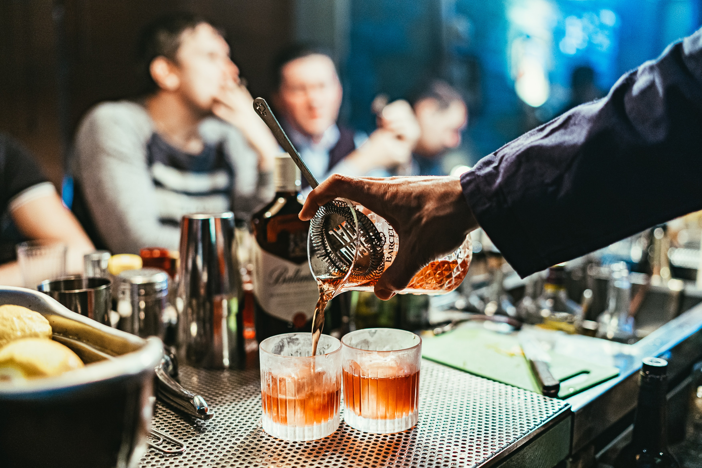

Sip and Savor

Scarf Signature Cocktail
A refreshing mix of gin, fresh lemon juice, elderflower liqueur, and tonic water, served with ice and garnished with a lemon twist and a sprig of rosemary.
Classic Old Fashioned
A timeless cocktail made with bourbon whiskey, bitters, and a sugar cube, garnished with an orange peel and a maraschino cherry.
Grilled Salmon
A perfectly cooked salmon fillet drizzled with lemon butter sauce, served with roasted potatoes and seasonal vegetables.

Espresso Martini
A rich and indulgent cocktail made with espresso, vodka, and a touch of sweetness, shaken with ice and garnished with a few coffee beans.